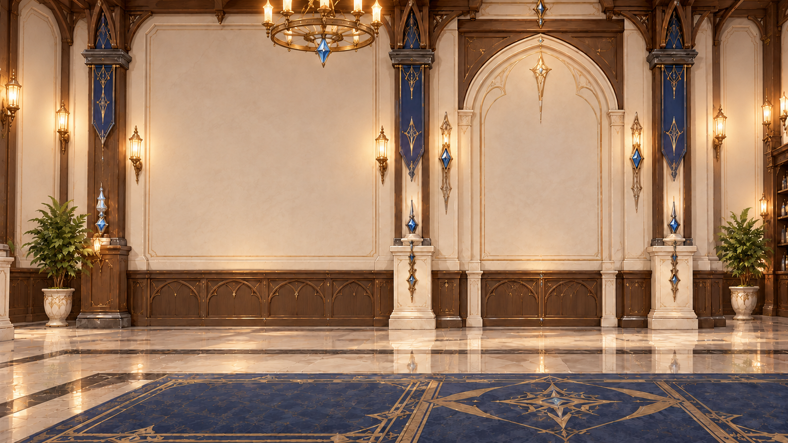
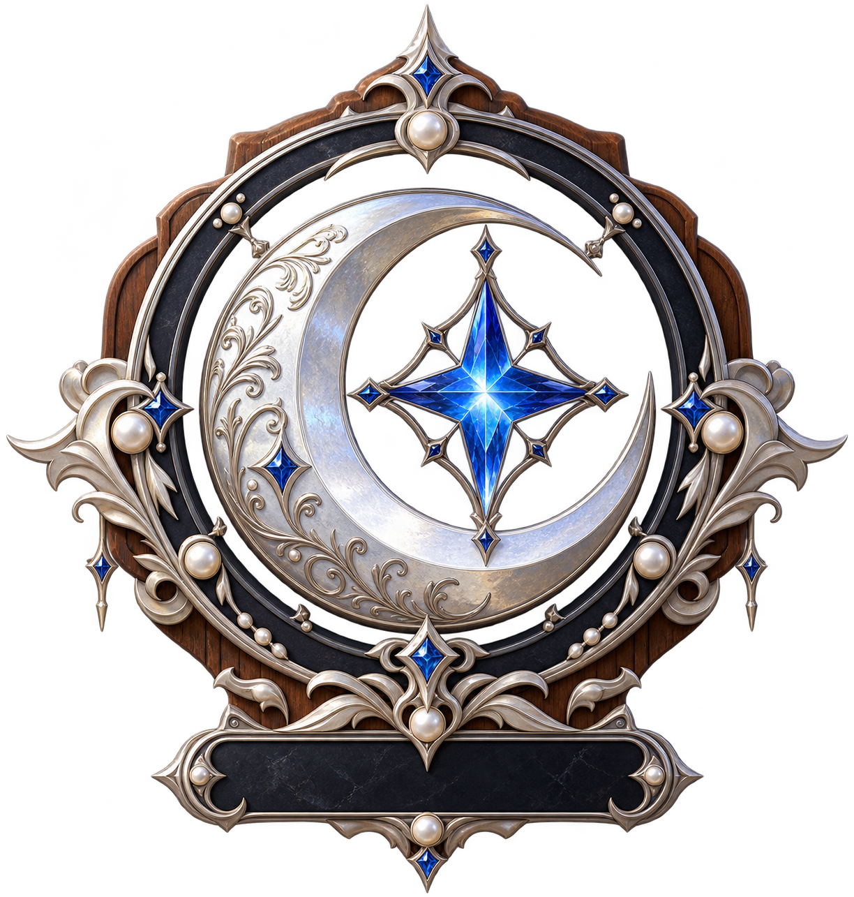
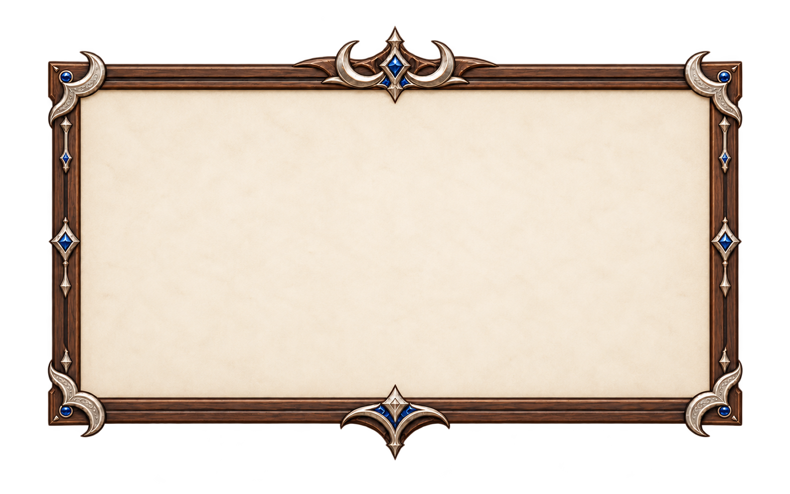
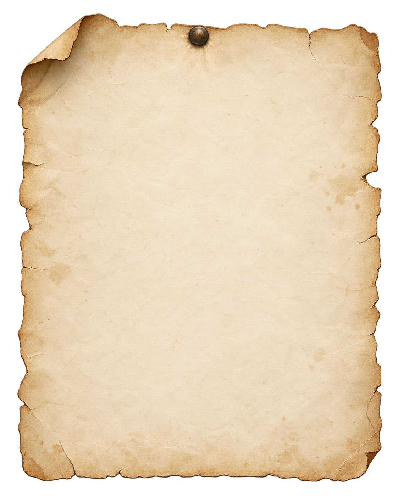
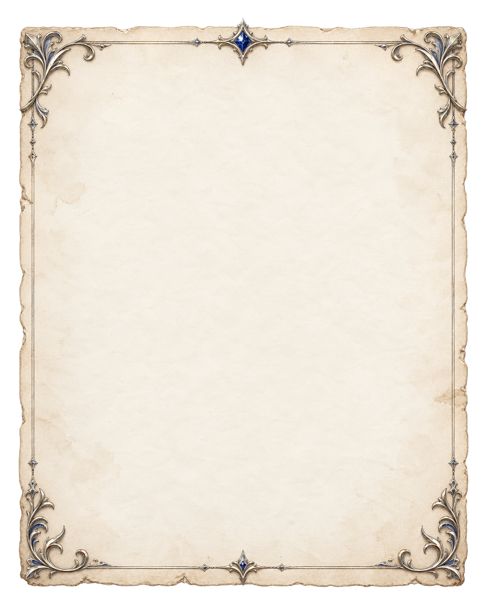

Pintu tertutup. Buka untuk melihat aula guild di baliknya.
Pengaturan suasana
Siklus siang–malam 20 detik, lampu pintu berpasangan dan jendela menyala saat malam.
Memuat gambar…



◈MAKLUMAT RESMI RESEPSIONIS GUILD • EST. 2026◈
WHERE LOGIC MEETS CRAFTSMANSHIPTURNING IDEAS INTO LIVING SYSTEMS.
Menempa otomatisasi spreadsheet berpresisi tinggi, aplikasi web tangguh, dan eksplorasi interaktif dari rasa penasaran menjadi solusi nyata yang siap diuji.


RANK S+📍
OPEN COMMISSION
Otomasi Spreadsheet & Web Apps Kustom
📜03 / KARYA
Papan Misi Utama
Jelajahi 3 karya unggulan guild: live demo absensi & payroll, pipeline otomatisasi spreadsheet, dan 3D showcase McLaren.
Lihat Lembaran Misi↗
📖02 / TENTANG
Catatan Pengrajin
Kisah identitas LUNIX, etos kerja tanpa bloat, serta prinsip penempaan solusi praktis yang dapat diandalkan setiap hari.
Baca Catatan Guild↗
🔔04 / KONTAK
Meja Resepsionis
Punya ide proyek, tantangan spreadsheet, atau sekadar ingin bertegur sapa? Resepsionis kami siap menyambutmu.
Temui Resepsionis↗
✦02 / DI BALIK LUNIXCATATAN RESEPSI GUILD
Rasa penasaran, tanpa batas.
Kalau sebuah ide menarik perhatianku, aku ingin memahami cara kerjanya—lalu mencoba membuatnya.
◈IDENTITAS & ASAL-USUL
Dulu, LuniX adalah namaku saat bermain game. Sekarang, LUNIX menjadi ruang untuk semua hal yang ingin kubuat: alat yang mempermudah pekerjaan, aplikasi yang berguna, dan dunia kecil untuk dijelajahi.
✦KOLABORASI & EKSPERIMEN
Meski orang di baliknya tetap aku, LUNIX terasa seperti partner. Tempat rasa penasaran berubah menjadi eksperimen nyata, didukung otomatisasi cerdas dan rasa ingin tahu.
💎TIGA PILAR PROSES KREATIF GUILD
01DECONSTRUCT
Pahami
Menganalisis akar kebutuhan operasional, alur data riil, dan titik hambatan yang ingin diatasi.
02EXPERIMENT
Coba
Meramu formula spreadsheet, sandbox prototipe browser, dan arsitektur database lokal.
03DELIVER
Wujudkan
Menghasilkan alat siap pakai yang praktis, cepat, aman, dan mempermudah tugas nyata.
Excel FormulaGoogle SheetsApps ScriptPayroll SystemAutomated RekapClient-Side PDF
🌐
Aplikasi Web & Eksperimen DigitalInteraktif, privat & mandiri
IndexedDB SandboxCanvas 3D ViewportVanilla Modern JSResponsive UIZero External UploadsAI-Assisted Craft
◈03 / PAPAN MISI & KARYA UNGGULAN GUILDAKTIF DI PAPAN
KARYA PILIHAN & MISI UTAMADARI IDE MENJADI SISTEM NYATA.
Pilih lembaran misi di bawah untuk mencoba live demo sandbox, menelusuri galeri pipeline spreadsheet, atau menjelajahi 3D web showcase McLaren.
RANK S • APPSIAP DICOBA ⚡
Attendance & Payroll Sandbox
Aplikasi absensi kalender presensi, unggah foto bukti, perhitungan jam kerja, dan generator slip gaji interaktif tanpa server eksternal.
Kalender AbsensiHitung LemburIndexedDBClient-Side
RANK A • DATAVERIFIED ✓
Spreadsheet & Data Pipeline
Input gaji, validasi anti-duplikasi, formula BPJS/pajak otomatis, generator slip gaji PDF massal, dan export payroll bank.
Formula OtomatisSlip PDF MassalTransfer BankApps Script
RANK SP • 3D60 FPS ✦
3D Web Showcase — McLaren
Showcase interaktif 3D kendaraan McLaren berbasis WebGL secara real-time. Navigasi orbit kamera 360°, inspeksi bodi mobil, dan rendering halus 60 FPS.
WebGL / 3DMcLaren ModelOrbit 360°Live Web
◈04 / MEJA RESEPSI & SALURAN RESMI GUILDMEJA AKTIF
PUNYA GAGASAN ATAU MISI?MARI KITA TEMPA BERSAMA.
Sampaikan rencana proyek atau pertanyaanmu langsung ke meja resepsionis guild. Setiap pesan ditanggapi langsung oleh pembuat sistem tanpa perantara dan tanpa overhead berlebih.
SALURAN RESMI GUILD • MERPATI POSlunix.builder@gmail.com